Learning By Doing - DevSecOps using Cloud Native Services
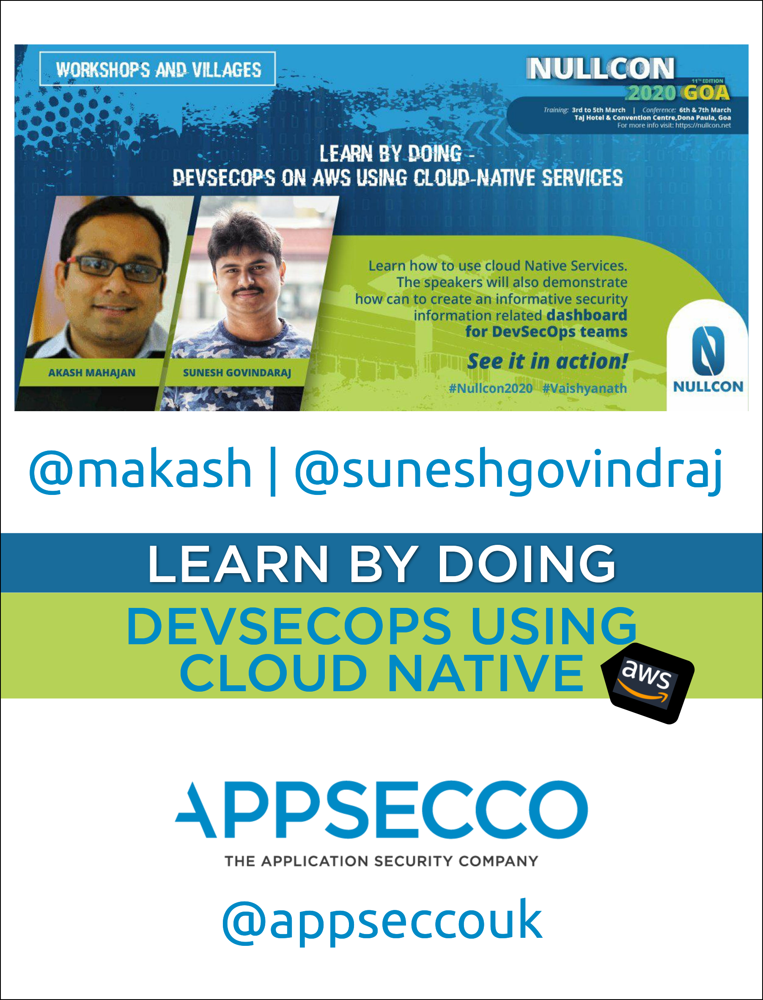
Introduction
The title of the workshop is DevSecOps on AWS using Cloud Native Services.
DevSecOps is changing enterprise IT the same way how DevOps transformed enterprise Dev. The complexity of operations is ever increasing and with the advent and extensive usage of public cloud the risk is ever greater.
We need to gear up for this world and a workable approach is to tackle this new world with the same enthusiasm as developers have taken up.
During this village we will teach the audience how to use cloud Native services such as Serverless (Lambda), Container run-times (Docker) and Container schedulers (ECS, Fargate). to enable near real time detection and blocking of security attacks, analyse incidents and even do remediation of potential security holes before they become a problem. We will also demonstrate how can we create informative security information related dashboard for the DevSecOps teams.

Why Cloud Native and what does Cloud Native mean
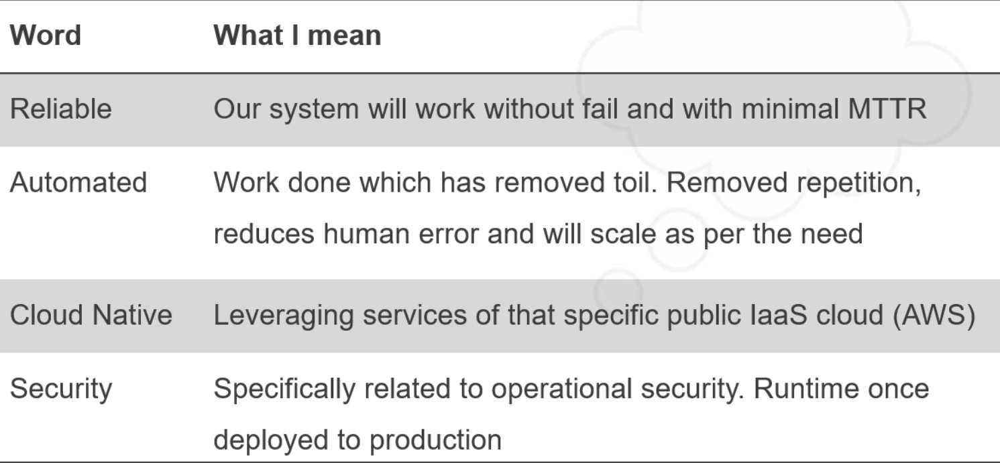
Additional reading
Agenda of the workshop
Please note
- This is a 2 hour workshop which means we have 120 minutes
- We plan to take you through 5 scenarios
- Scenario 4 is more of a concept note but very important to understand for any DevSecOps practioner
| Scenario Number | Topic | Approximate Time (In minutes) |
|---|---|---|
| -- | Introduction and sharing repo URL | 10 |
| 1. | Defending against public S3 buckets | 30 |
| 2. | Automating response against SSH Bruteforce attacks | 30 |
| 3. | Automating baseline security hardening for new AWS account | 20 |
| 4. | Playbooks and Runbooks for AWS Incident Response | 15 |
| 5. | Security Dashboard using Static Site Generator | 10 |
| -- | Question and Answers with the audience | 5 |
Akash Mahajan
Co-Founder and Director, Appsecco
Author
| Cover | Details |
|---|---|
| 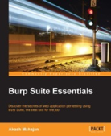 | Book - Burp Suite Essentials, Published by PacktPub November 2014, ISBN 978-1783550111 |
 | Book – Security Automation with Ansible2, Published by PacktPub December 2017, ISBN 9781788394512 |
Reviewer
| Thing | Details |
|---|---|
| 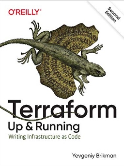 | Book - Terraform - Up & Running: Writing Infrastructure as Code 2ed, Published by O'Reilly September 2019, ISBN 9781492046899 |
| Conference - Recon Village, Organised by Shubham Mittal and crew | |
| 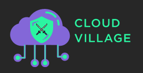 | Conference - Cloud Village, Organised by Jayesh S Chauhan and crew |
Online
| Account | Details |
|---|---|
| Website | https://akashm.com |
| @makash | |
| Akash Mahajan |
Sunesh Govindaraj
Security Engineer, Appsecco
About Me
Sunesh Govindaraj is a Security Engineer with Appsecco. He has a strong passion for Security and building solutions that would solve real-world security problems. Having nearly four years of experience in DevOps, Security and Web Application Development, he has worked on multiple web technologies and contributed to their DevSecOps cycle. Along that line, he has always ensured that security is given prime importance. He is also credited with vulnerability discovery in OpenSource products with CVEs to his name such as CVE-2019-16936, CVE-2019-16937, CVE-2019-16938, CVE-2019-16939, CVE-2019-16940.
Online
| Account | Details |
|---|---|
| Website | https://suneshgovind.com |
| @suneshgovind | |
| Sunesh Govindaraj |
Appsecco
Appsecco is a specialist cloud and application security company, founded in 2015, with presence in London, Bangalore and Boston and providing industry-leading security advice that is firmly grounded in commercial reality.
| Info | Details |
|---|---|
| Website | https://appsecco.com |
| Technical blog | https://blog.appsecco.com |
| Open Source @ Appsecco | https://github.com/appsecco |
| contact@appsecco.com | |
| Phone | +44 20 3137 0558 |
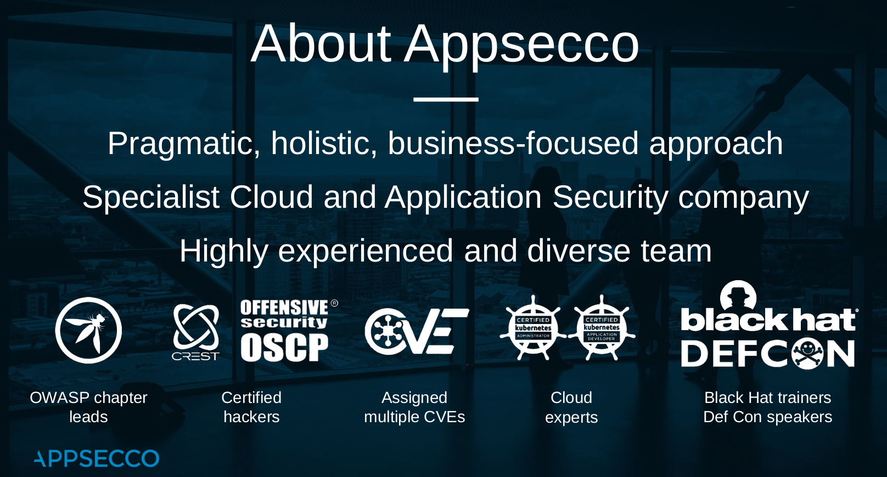
Team Capabilities
- OSCP
- Certified Kubernetes Administrators
- Certified Kubernetes Application Developers
- CREST Certified
- AWS Security Certified
- Published Authors
- Security Community Leaders (OWASP/null0x00)
- Release bunch of OSS for Pentesting and DevSecOps teams
Disclaimer and License
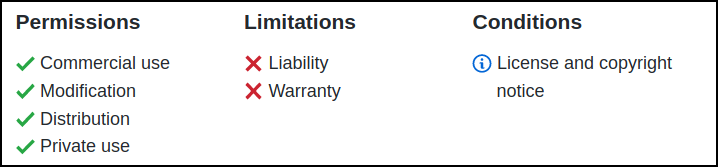
The MIT License
Copyright (c) 2020 Appsecco, Ltd. https://appsecco.com
Permission is hereby granted, free of charge, to any person obtaining a copy of this software and associated documentation files (the "Software"), to deal in the Software without restriction, including without limitation the rights to use, copy, modify, merge, publish, distribute, sublicense, and/or sell copies of the Software, and to permit persons to whom the Software is furnished to do so, subject to the following conditions:
The above copyright notice and this permission notice shall be included in all copies or substantial portions of the Software.
THE SOFTWARE IS PROVIDED "AS IS", WITHOUT WARRANTY OF ANY KIND, EXPRESS OR IMPLIED, INCLUDING BUT NOT LIMITED TO THE WARRANTIES OF MERCHANTABILITY, FITNESS FOR A PARTICULAR PURPOSE AND NONINFRINGEMENT. IN NO EVENT SHALL THE AUTHORS OR COPYRIGHT HOLDERS BE LIABLE FOR ANY CLAIM, DAMAGES OR OTHER LIABILITY, WHETHER IN AN ACTION OF CONTRACT, TORT OR OTHERWISE, ARISING FROM, OUT OF OR IN CONNECTION WITH THE SOFTWARE OR THE USE OR OTHER DEALINGS IN THE SOFTWARE.
Automated Defence against public S3 buckets
Cloud Custodian
- Custodian is an open source rules engine for fleet management in AWS
- YAML DSL for policies based on querying resources or subscribe to events then apply filters and take actions.
- Outputs to Amazon S3, Amazon Cloud Watch Logs, Amazon Cloud Watch Metrics
Consider this is an open-source replacement for AWS Cloud Config :)
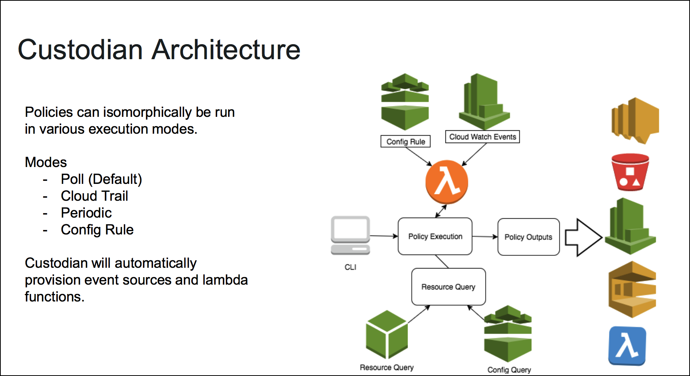
Overview
Organizations can use Custodian to manage their AWS environments by ensuring compliance to security policies, tag policies, garbage collection of unused resources, and cost management via off-hours resource management, all from the same place. Custodian policies are written in simple YAML configuration files that specify given resource types and are constructed from a vocabulary of filters and actions.
References
Deployment
Setting up infrastructure for AWS
cd into infra-deployment directory. We have the Ansible Playbook that we use for creating S3 buckets
export uniquename=<some-random-value>
export AWS_PROFILE=devsecops-adef
ansible-playbook main.yml
Replace
with a random value, just to increase the randomness of the bucket name. The playbook works with your AWS_PROFILE in your environment. This will work only if you have created a profile using aws configure
This script will use the stored AWS credentials to deploy the S3 buckets with random files and permissions
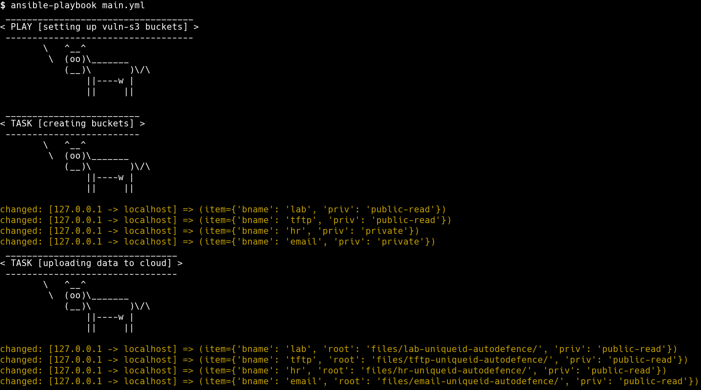
Attack
Enumerating public s3 buckets
- To enumerate public S3 buckets in the account we will use a Open Source tool
slurp. The Go binary built from github and is present in the current repo.
chmod +x slurp
Before running slurp, ensure that you have the AWS_PROFILE variable exported
Execute slurp with the following command to find Public S3 buckets,
./slurp internal
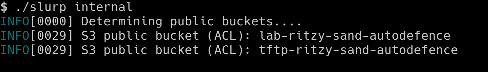
Defence
Installing Cloud Custodian
python3 -m virtualenv custodian
source custodian/bin/activate
pip install c7n
Writing policy
A policy specifies the following items
- The type of resource to run the policy against
- Filters to narrow down the set of resources
- Actions to take on the filtered set of resources
Policy to look for public access buckets
- Create new policy
vi s3-public-access.yml
policies:
- name: s3-global-access
description: |
Finds global access s3 buckets in your account
resource: s3
region: ap-south-1
filters:
- type: global-grants
actions:
- no-op
- We can validate the policy before executing by running the following command
custodian validate s3-public-access.yml
- Perform the dryrun by running the following command
custodian run --dryrun -s output s3-public-access.yml
- Execute the policy by running the following command
custodian run -s output s3-public-access.yml
- Then access the buckets public using
cat output/s3-global-access/resources.json | grep autodefence
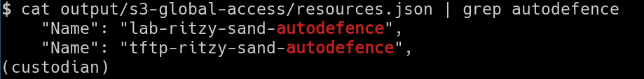
Applying the changes to fix this issue
- Update the policy with below changes
vi s3-public-access.yml
policies:
- name: s3-global-access
description: |
Finds global access s3 buckets in your account and fix them
resource: s3
region: ap-south-1
filters:
- type: global-grants
actions:
- type: delete-global-grants
grantees:
- "http://acs.amazonaws.com/groups/global/AllUsers"
- "http://acs.amazonaws.com/groups/global/AuthenticatedUsers"
- Now validate and execute the policy to apply the changes to fix the s3 buckets public access
custodian validate s3-public-access.yml
custodian run --dryrun -s output s3-public-access.yml
custodian run -s output s3-public-access.yml
- Then run the
slurpto scan for the s3 buckets again to see if the defence applied
./slurp internal
The result will not return any Public S3 buckets that we created
Automated Defence against SSH Bruteforce
In this scenario,
- We will setup our infrastructure, which consists of a VM with SSH password authentication
- We will setup the serverless components required for Automated Defence
- We will perform a bruteforce attack on the SSH service and see how to defend against the attack using serverless and automated defence approach
Deployment of Machine
We will deploy the instance with an exposed SSH service through the following steps,
- We will create an instance in EC2
- We will add a rule in Security Group for port
22to be open to everyone - Test the instance by connecting it over SSH
Deployment of Defence
We will follow the below sections to setup CloudWatch and Serverless defence against SSH Bruteforce attacks
Installing CloudWatch Agent on SSH Instance
We will need to create an IAM Role for the CloudWatch agent running in EC2 instance to be able to push logs to CloudWatch. For this we will create a role with the policy CloudWatchAgentServerPolicy and will have to attach it to the Instance.
Once we have attached the role to the instance, we can download and install the agent from the official repo. Log in into the machine and run the below commands,
wget https://s3.amazonaws.com/amazoncloudwatch-agent/ubuntu/amd64/latest/amazon-cloudwatch-agent.deb
Once the file download is complete, we can install the debian package,
sudo dpkg -i amazon-cloudwatch-agent.deb
Once the installation is complete, we will need to create the configuration for CloudWatch Agent to run with.
{
"agent": {
"run_as_user": "root"
},
"logs": {
"logs_collected": {
"files": {
"collect_list": [
{
"file_path": "/var/log/auth.log",
"log_group_name": "ssh_logs",
"log_stream_name": "{instance_id}"
}
]
}
}
}
}
Copy and save the above configuration to a file config.json in your Linux machine. Configuration can also be generated interactively using the config-wizard command -
sudo /opt/aws/amazon-cloudwatch-agent/bin/amazon-cloudwatch-agent-config-wizard
Essentially in the configuration we ask the CloudWatch agent to look for /var/log/auth.log where the ssh logs are stored and push them to CloudWatch under the log group ssh_logs with the stream name same as the instance ID.
To start the CloudWatch Agent run the below command,
sudo /opt/aws/amazon-cloudwatch-agent/bin/amazon-cloudwatch-agent-ctl -a fetch-config -m ec2 -c file:configuration-file-path -s
Update the
configuration-file-pathfield with the absolute path to yourconfig.jsonfile
-ais for choosing an Action through which we dofetch-configto select our config file
-mis for mode
-sis to start the agent
We can verify that the logs are being pushed to CloudWatch by heading to CloudWatch console - Log Groups section
Create CloudWatch Metric and Alarm
Now that we have the SSH logs in CloudWatch, we can create a metric to filter failed attempts and use an alarm to notify us about a possible attack. To create a metric, we need to understand the pattern in which SSH logs are created.
A sample failed attempt log would look like below,
Feb 24 06:58:52 ip-172-31-40-226 sshd[3340]: Invalid user mno from 127.0.0.1 port 38168
To filter the logs that fall under the above pattern, we will use this filter,
[Mon, day, timestamp, ip, id, status="Invalid", user, username, from, srcip, ...]
To create the metric, we will use the below command,
aws logs put-metric-filter \
--log-group-name ssh_logs \
--filter-name FailedSSHAttempts \
--filter-pattern '[Mon, day, timestamp, ip, id, status="Invalid", user, username, from, srcip, ...]' \
--metric-transformations \
metricName=failed_ssh_attempts,metricNamespace=LogMetrics,metricValue=1,defaultValue=0
The command will create a metric with the name failed_ssh_attempts that we can further use it for creating an alarm. Before creating an Alarm we will need an Simple Notification Service (SNS) topic created which would notified when there is an alarm. To create a SNS topic,
aws sns create-topic --name bruteforce-trigger-lambda
The above command will create a SNS topic bruteforce-trigger-lambda and return the Arn for the resource. We will use that Arn to create the alarm using the below command,
aws cloudwatch put-metric-alarm \
--alarm-name SSHBruteForceAlarm \
--metric-name failed_ssh_attempts \
--namespace LogMetrics \
--statistic Sum \
--period 300 \
--threshold 5 \
--comparison-operator GreaterThanOrEqualToThreshold \
--evaluation-periods 1 \
--alarm-actions arn:aws:sns:ap-south-1:394310921697:bruteforce-trigger-lambda
The command will create an alarm using the metric that we had created before and if there are more than or equal to 5 events present during a time period of 5 minutes (300 seconds), then the alarm will trigger the SNS topic bruteforce-trigger-lambda that we created.
Serverless Defence for identifying the IP and blocking it
We will deploy two serverless applications on Lambda. The first serverless function will have HTTP endpoints that would block a given IP and also show the blocking history for the Access Control List (ACL). All this data gets stored in DynamoDB to maintain history.
cd into the serverless-fn-blockip directory. The following parameters are configurable before deployment,
- region: AWS Region to deploy in. ACL must be in the same region
- accessToken: Access token used to authorize requests to block IPs
- aclID: ACL that will be used for blocking
- stateTableName: DynamoDB table that will be created to maintain current blocking state
- historyTableName: DynamoDB table that will be created to maintain action history
- ruleValidity: Time (in minutes) after which the IP is unblocked
Configure the above fields in config.js file,
module.exports = {
region: "<AWS_REGION>",
accessToken: "<SOME_RANDOM_STRING>",
aclId: "<VPC_ACL_ID>",
stateTableName: "ip_block_state",
historyTableName: "ip_block_history",
ruleValidity: 10
}
Make sure to modify at least the region, aclId and accessToken based on your requirements before deployment.
To deploy the function we use Serverless framework which in turn would create a CloudFormation stack to get the required resources deployed. cd into the directory and run the below commands,
npm install
#Create DynamoDB tables
node initDb.js
serverless deploy
The deploy command would return the endpoints that we require once the stack is created. Note down the endpoints, for use in future.
For the next Serverless function, cd into serverless-fn-trigger directory. The following parameters are configurable before deployment,
- region: AWS Region to deploy in. Same as the previous function
- logGroup: Name of the log group (in our case ssh_logs)
- blockIPLambdaUrl: blockIP function's HTTP Endpoint returned in previous step
- blockIPLambdaAccessToken: Access token used to authorize requests to block IPs
- attackThreshold: Minimum number of events from a single IP to block the IP
- startTimeOffset: Time offset from current time after which the requests are considered in minutes
module.exports = {
region: "<AWS_REGION>",
logGroup: "<LOG_GROUP_NAME>",
blockIPLambdaUrl: "<BLOCK_IP_ENDPOINT>",
blockIPLambdaAccessToken: "<BLOCK_IP_ENDPOINT_ACCESS_TOKEN>"
attackThreshold: 3,
startTimeOffset: 5,
}
Make sure to modify at least the region, logGroup, blockIPLambdaUrl and blockIPLambdaAccessToken before deployment
In the serverless.yml configuration file, we will have to add the SNS Topic ARN and name as the trigger for the lambda function that is to be deployed. This will connect our previous infrastructure (CloudWatch Logs, Metric and Alarms) with the Lambda functions.
Update the values <AWS_ARN_SNS_TOPIC> and <SNS_TOPIC_NAME> under the functions section of the config file,
functions:
vpchandler:
handler: handler.vpchandler
events:
- sns:
arn: <AWS_ARN_SNS_TOPIC>
topicName: <SNS_TOPIC_NAME>
Once done, to deploy the serverless application, run the below commands,
npm install
serverless deploy
Defence working against Attack
Now that we have the defence set up, we can verify the defence working by performing an bruteforce attack on the instance. We will use a simple bash script to attack our instance with a predefined list of usernames and passwords.
chmod u+x bruteforce_attack.sh
./bruteforce_attack.sh
You will be prompted to enter an IP. Enter the public IP address of the SSH instance, the script will attempt 10 combinations of username and password. This would be enough for the defence to kick in, since we have set our Alarm Threshold as 5.
We could go to the CloudWatch console, to see that the Alarm goes to in-alarm state and triggers our SNS topic. Once the SNS topic is triggered, our Lambda function serverless-fn-trigger will get triggered which will do the analysis on the source of the attack and count of requests that came from a single IP.
Once it determines the number of requests coming from a single IP, it will call the other Lambda function serverless-fn-blockip with an IP to block. The IP will be added to Dynamo Table and also the Network ACL of the VPC that our SSH machine belongs to.
We can go to the ACL to see that traffic to the IP the requests originated from is added with a DENY.
Automated Security Baseline for a new AWS Account
In this scenario, for a new AWS account we will see,
- the important factors to consider
- how to create a secure baseline
- how to automate the baseline
To create a secure baseline we will follow the CIS Foundation benchmark recommendations. The recommendations include four main categories,
- Identity and Access Management
- Logging
- Monitoring
- Networking
We will perform changes and modify certain configuration in the four broad sections above to harden our new AWS account. CIS benchmarks provides a list of rules or configuration checks that we can do to check if our account is secure enough or not.
To perform the audit and make changes, we would need a account with administrative privileges. We will use the root account to create another account called security-auditor or iamadmin and create access keys for the account. We will use AWS-CLI for most of the audit that we do.
Identity and Access Management
IAM Password Policy
- Password should have at the least one character of - Uppercase, Lowercase, Symbol and Number.
- Minimum length of password - 14 or more
- No password reuse
- Password expiry - 90 days or less
aws iam update-account-password-policy \
--require-uppercase-characters \
--require-lowercase-characters \
--require-numbers \
--require-symbols \
--password-reuse-prevention 24 \
--max-password-age 90
Ensure a support role has been created to manage incidents with AWS Support
Get IAM user's ARN
aws iam get-user --user-name <USERNAME_OF_USER>
Trust policy
Save it as a file file:///tmp/TrustPolicy.json with the ARN of the user from previous step
{
"Version": "2012-10-17",
"Statement": [
{
"Effect": "Allow",
"Principal": {
"AWS": "<ARN_OF_THE_USER>"
},
"Action": "sts:AssumeRole"
}
]
}
Create IAM Role
aws iam create-role \
--role-name aws_support_iam_role \
--assume-role-policy-document file:///tmp/TrustPolicy.json
Attach role to AWSSupportAccess managed policy
aws iam attach-role-policy \
--policy-arn 'arn:aws:iam::aws:policy/AWSSupportAccess' \
--role-name aws_support_iam_role
Logging
Ensure CloudTrail is enabled in all regions
- Navigate to CloudTrail console
- Click on Create Trail
- Enter a
Trail nameand chooseYesforApply trail to all regions
- Under
Storage location, chooseYesto Create a new S3 bucket and give a unique name forS3 bucket - Click on
Advancedand chooseYestoEncrypt log files with KMSandCreate a new KMS key. Give a KMS key name - Choose
YesforEnable log file validation
Ensure CloudTrail trails are integrated with CloudWatch Logs
- In the CloudTrail console, click on
Trailson the left panel - Click on the Trail created in previous step
- Scroll down to find
CloudWatch Logsand click onConfigure - Leave the default CloudTrail log group name and click on
Continue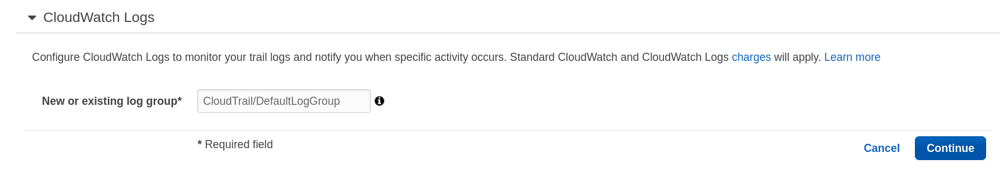 - You will be prompted to create a Role with which CloudTrail with put logs to CloudWatch. Click on
Allowat the bottom, 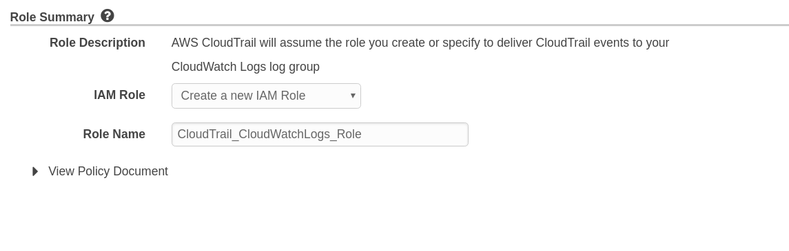
Ensure S3 bucket access logging is enabled on the CloudTrail S3 bucket
- Navigate to S3 console
- Click on the CloudTrail bucket created previously
- Click on
Propertiestab - Click on
Server Access Logging - Select
Enabled - Choose the bucket created during CloudTrail creation part as Target and enter a
Target Prefix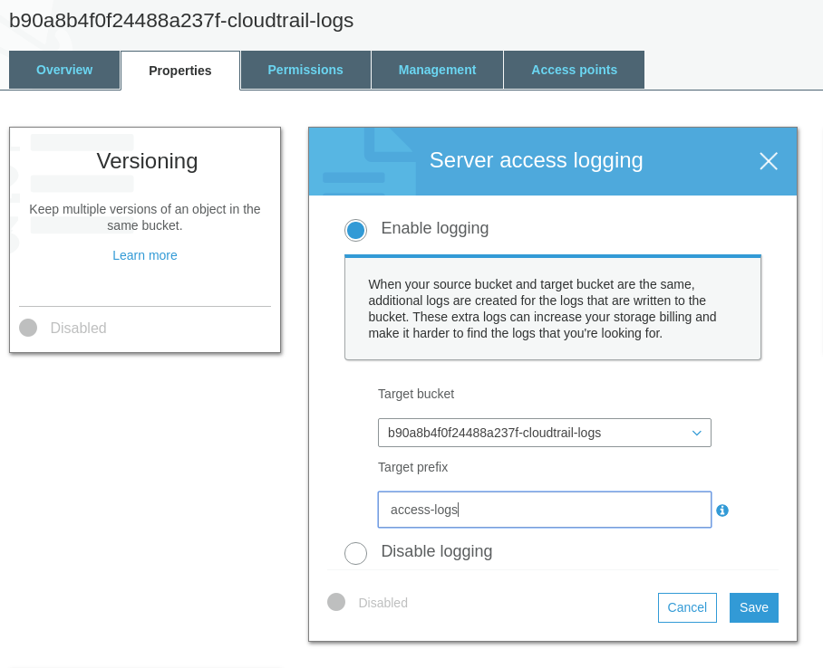
Ensure VPC flow logging is enabled in all VPCs
Get VPC ID
Note down the VpcId
aws ec2 describe-vpcs
Create Log Group
aws logs create-log-group \
--log-group-name vpc-flow-logs
Create IAM Role
Policy to write to CloudWatch
Save to a file /tmp/vpc_cloudwatch_role.json
{
"Version": "2012-10-17",
"Statement": [
{
"Effect": "Allow",
"Principal": {
"Service": "vpc-flow-logs.amazonaws.com"
},
"Action": "sts:AssumeRole"
}
]
}
Create role with Trust Policy document
aws iam create-role \
--role-name flowLogsRole \
--assume-role-policy-document file:///tmp/vpc_cloudwatch_role.json
Attach Role policy to role created
aws iam attach-role-policy \
--policy-arn 'arn:aws:iam::aws:policy/CloudWatchLogsFullAccess' \
--role-name flowLogsRole
Enable Flow logs
aws ec2 create-flow-logs \
--resource-type VPC \
--resource-ids <VPC_ID> \
--traffic-type REJECT \
--log-group-name vpc-flow-logs \
--deliver-logs-permission-arn <IAM_ROLE_ARN>
<VPC_ID> and <IAM_ROLE_ARN> should be substituted before running the previous command. The create command should be repeated for all VPCs
Monitoring
Create SNS Topic and Subscription
This SNS topic and subscription will be used for all monitoring enabled in the next steps
aws sns create-topic --name monitoring-topic
aws sns subscribe \
--topic-arn <ARN_OF_TOPIC> \
--protocol email \
--notification-endpoint <admin@example.com>
<ARN_OF_TOPIC> and admin@example.com should be substituted with proper values before running the previous command. Note down the ARN of topic for future use
Ensure a log metric filter and alarm exist for unauthorized API calls
Create Metric Filter
aws logs put-metric-filter \
--log-group-name <CloudTrail_Log_Group_Name> \
--filter-name UnAuthorizedAPICalls \
--filter-pattern '{($.errorCode="*UnauthorizedOperation") || ($.errorCode="AccessDenied*")}' \
--metric-transformations metricName=UnAuthorizedAPICalls,metricNamespace=LogMetrics,metricValue=1
Create Alarm using above Metric
aws cloudwatch put-metric-alarm \
--alarm-name UnAuthorizedAPICallsAlarm \
--comparison-operator GreaterThanOrEqualToThreshold \
--evaluation-periods 1 \
--metric-name UnAuthorizedAPICalls \
--namespace LogMetrics \
--period 300 \
--statistic Sum \
--threshold 1 \
--alarm-actions <ARN_OF_TOPIC>
Ensure a log metric filter and alarm exist for Management Console sign-in without MFA
Create Metric Filter
aws logs put-metric-filter \
--log-group-name <CloudTrail_Log_Group_Name> \
--filter-name NoMFASignIn \
--filter-pattern '{($.eventName="ConsoleLogin") && ($.additionalEventData.MFAUsed !="Yes")}' \
--metric-transformations metricName=NoMFASignIn,metricNamespace=LogMetrics,metricValue=1
Create Alarm using above Metric
aws cloudwatch put-metric-alarm \
--alarm-name NoMFASignInAlarm \
--comparison-operator GreaterThanOrEqualToThreshold \
--evaluation-periods 1 \
--metric-name NoMFASignIn \
--namespace LogMetrics \
--period 300 \
--statistic Sum \
--threshold 1 \
--alarm-actions <ARN_OF_TOPIC>
Ensure a log metric filter and alarm exist for usage of "root" account
Create Metric Filter
aws logs put-metric-filter \
--log-group-name <CloudTrail_Log_Group_Name> \
--filter-name RootAccountUsage \
--filter-pattern '{$.userIdentity.type="Root" && $.userIdentity.invokedBy NOT EXISTS && $.eventType !="AwsServiceEvent"}' \
--metric-transformations metricName=RootAccountUsage,metricNamespace=LogMetrics,metricValue=1
Create Alarm using above Metric
aws cloudwatch put-metric-alarm \
--alarm-name RootAccountUsageAlarm \
--comparison-operator GreaterThanOrEqualToThreshold \
--evaluation-periods 1 \
--metric-name RootAccountUsage \
--namespace LogMetrics \
--period 300 \
--statistic Sum \
--threshold 1 \
--alarm-actions <ARN_OF_TOPIC>
Ensure a log metric filter and alarm exist for IAM policy changes
Create Metric Filter
aws logs put-metric-filter \
--log-group-name <CloudTrail_Log_Group_Name> \
--filter-name IAMPolicyChange \
--filter-pattern '{($.eventName=DeleteGroupPolicy) || ($.eventName=DeleteRolePolicy) || ($.eventName=DeleteUserPolicy) || ($.eventName=PutGroupPolicy) || ($.eventName=PutRolePolicy) || ($.eventName=PutUserPolicy) || ($.eventName=CreatePolicy) || ($.eventName=DeletePolicy) || ($.eventName=CreatePolicyVersion) || ($.eventName=DeletePolicyVersion) || ($.eventName=AttachRolePolicy) || ($.eventName=DetachRolePolicy) || ($.eventName=AttachUserPolicy) || ($.eventName=DetachUserPolicy) || ($.eventName=AttachGroupPolicy) || ($.eventName=DetachGroupPolicy)}' \
--metric-transformations metricName=IAMPolicyChange,metricNamespace=LogMetrics,metricValue=1
Create Alarm using above Metric
aws cloudwatch put-metric-alarm \
--alarm-name IAMPolicyChangeAlarm \
--comparison-operator GreaterThanOrEqualToThreshold \
--evaluation-periods 1 \
--metric-name IAMPolicyChange \
--namespace LogMetrics \
--period 300 \
--statistic Sum \
--threshold 1 \
--alarm-actions <ARN_OF_TOPIC>
Ensure a log metric filter and alarm exist for CloudTrail configuration changes
Create Metric Filter
aws logs put-metric-filter \
--log-group-name <CloudTrail_Log_Group_Name> \
--filter-name CloudTrailConfigChange \
--filter-pattern '{($.eventName=CreateTrail) || ($.eventName=UpdateTrail) || ($.eventName=DeleteTrail) || ($.eventName=StartLogging) || ($.eventName=StopLogging)}' \
--metric-transformations metricName=CloudTrailConfigChange,metricNamespace=LogMetrics,metricValue=1
Create Alarm using above Metric
aws cloudwatch put-metric-alarm \
--alarm-name CloudTrailConfigChangeAlarm \
--comparison-operator GreaterThanOrEqualToThreshold \
--evaluation-periods 1 \
--metric-name CloudTrailConfigChange \
--namespace LogMetrics \
--period 300 \
--statistic Sum \
--threshold 1 \
--alarm-actions <ARN_OF_TOPIC>
Ensure a log metric filter and alarm exist for AWS Management Console authentication failures
Create Metric Filter
aws logs put-metric-filter \
--log-group-name <CloudTrail_Log_Group_Name> \
--filter-name ConsoleAuthFailure \
--filter-pattern '{($.eventName=ConsoleLogin) && ($.errorMessage="Failed authentication")}' \
--metric-transformations metricName=ConsoleAuthFailure,metricNamespace=LogMetrics,metricValue=1
Create Alarm using above Metric
aws cloudwatch put-metric-alarm \
--alarm-name ConsoleAuthFailureAlarm \
--comparison-operator GreaterThanOrEqualToThreshold \
--evaluation-periods 1 \
--metric-name ConsoleAuthFailure \
--namespace LogMetrics \
--period 300 \
--statistic Sum \
--threshold 1 \
--alarm-actions <ARN_OF_TOPIC>
Ensure a log metric filter and alarm exist for disabling or scheduled deletion of customer created CMKs
Create Metric Filter
aws logs put-metric-filter \
--log-group-name <CloudTrail_Log_Group_Name> \
--filter-name DisableOrDeleteCMK \
--filter-pattern '{($.eventSource=kms.amazonaws.com) && (($.eventName=DisableKey) || ($.eventName=ScheduleKeyDeletion))}' \
--metric-transformations metricName=DisableOrDeleteCMK,metricNamespace=LogMetrics,metricValue=1
Create Alarm using above Metric
aws cloudwatch put-metric-alarm \
--alarm-name DisableOrDeleteCMKAlarm \
--comparison-operator GreaterThanOrEqualToThreshold \
--evaluation-periods 1 \
--metric-name DisableOrDeleteCMK \
--namespace LogMetrics \
--period 300 \
--statistic Sum \
--threshold 1 \
--alarm-actions <ARN_OF_TOPIC>
Ensure a log metric filter and alarm exist for S3 bucket policy changes
Create Metric Filter
aws logs put-metric-filter \
--log-group-name <CloudTrail_Log_Group_Name> \
--filter-name S3bucketPolicyChange \
--filter-pattern '{($.eventSource=s3.amazonaws.com) && (($.eventName=PutBucketAcl) || ($.eventName=PutBucketPolicy) || ($.eventName=PutBucketCors) || ($.eventName=PutBucketLifecycle) || ($.eventName=PutBucketReplication) || ($.eventName=DeleteBucketPolicy) || ($.eventName=DeleteBucketCors) || ($.eventName=DeleteBucketLifecycle) || ($.eventName=DeleteBucketReplication))}' \
--metric-transformations metricName=S3bucketPolicyChange,metricNamespace=LogMetrics,metricValue=1
Create Alarm using above Metric
aws cloudwatch put-metric-alarm \
--alarm-name S3bucketPolicyChangeAlarm \
--comparison-operator GreaterThanOrEqualToThreshold \
--evaluation-periods 1 \
--metric-name S3bucketPolicyChange \
--namespace LogMetrics \
--period 300 \
--statistic Sum \
--threshold 1 \
--alarm-actions <ARN_OF_TOPIC>
Ensure a log metric filter and alarm exist for AWS Config configuration changes
Create Metric Filter
aws logs put-metric-filter \
--log-group-name <CloudTrail_Log_Group_Name> \
--filter-name AWSConfigChange \
--filter-pattern '{($.eventSource=config.amazonaws.com) && (($.eventName=StopConfigurationRecorder) || ($.eventName=DeleteDeliveryChannel) || ($.eventName=PutDeliveryChannel) || ($.eventName=PutConfigurationRecorder))}' \
--metric-transformations metricName=AWSConfigChange,metricNamespace=LogMetrics,metricValue=1
Create Alarm using above Metric
aws cloudwatch put-metric-alarm \
--alarm-name AWSConfigChangeAlarm \
--comparison-operator GreaterThanOrEqualToThreshold \
--evaluation-periods 1 \
--metric-name AWSConfigChange \
--namespace LogMetrics \
--period 300 \
--statistic Sum \
--threshold 1 \
--alarm-actions <ARN_OF_TOPIC>
Ensure a log metric filter and alarm exist for security group changes
Create Metric Filter
aws logs put-metric-filter \
--log-group-name <CloudTrail_Log_Group_Name> \
--filter-name SecurityGroupChange \
--filter-pattern '{($.eventName=AuthorizeSecurityGroupIngress) || ($.eventName=AuthorizeSecurityGroupEgress) || ($.eventName=RevokeSecurityGroupIngress) || ($.eventName=RevokeSecurityGroupEgress) || ($.eventName=CreateSecurityGroup) || ($.eventName=DeleteSecurityGroup)}' \
--metric-transformations metricName=SecurityGroupChange,metricNamespace=LogMetrics,metricValue=1
Create Alarm using above Metric
aws cloudwatch put-metric-alarm \
--alarm-name SecurityGroupChangeAlarm \
--comparison-operator GreaterThanOrEqualToThreshold \
--evaluation-periods 1 \
--metric-name SecurityGroupChange \
--namespace LogMetrics \
--period 300 \
--statistic Sum \
--threshold 1 \
--alarm-actions <ARN_OF_TOPIC>
Ensure a log metric filter and alarm exist for changes to Network Access Control Lists (NACL)
Create Metric Filter
aws logs put-metric-filter \
--log-group-name <CloudTrail_Log_Group_Name> \
--filter-name NACLChange \
--filter-pattern '{($.eventName=CreateNetworkAcl) || ($.eventName=CreateNetworkAclEntry) || ($.eventName=DeleteNetworkAcl) || ($.eventName=DeleteNetworkAclEntry) || ($.eventName=ReplaceNetworkAclEntry) || ($.eventName=ReplaceNetworkAclAssociation)}' \
--metric-transformations metricName=NACLChange,metricNamespace=LogMetrics,metricValue=1
Create Alarm using above Metric
aws cloudwatch put-metric-alarm \
--alarm-name NACLChangeAlarm \
--comparison-operator GreaterThanOrEqualToThreshold \
--evaluation-periods 1 \
--metric-name NACLChange \
--namespace LogMetrics \
--period 300 \
--statistic Sum \
--threshold 1 \
--alarm-actions <ARN_OF_TOPIC>
Ensure a log metric filter and alarm exist for changes to network gateways
Create Metric Filter
aws logs put-metric-filter \
--log-group-name <CloudTrail_Log_Group_Name> \
--filter-name NetworkGatewayChange \
--filter-pattern '{($.eventName=CreateCustomerGateway) || ($.eventName=DeleteCustomerGateway) || ($.eventName=AttachInternetGateway) || ($.eventName=CreateInternetGateway) || ($.eventName=DeleteInternetGateway) || ($.eventName=DetachInternetGateway)}' \
--metric-transformations metricName=NetworkGatewayChange,metricNamespace=LogMetrics,metricValue=1
Create Alarm using above Metric
aws cloudwatch put-metric-alarm \
--alarm-name NetworkGatewayChangeAlarm \
--comparison-operator GreaterThanOrEqualToThreshold \
--evaluation-periods 1 \
--metric-name NetworkGatewayChange \
--namespace LogMetrics \
--period 300 \
--statistic Sum \
--threshold 1 \
--alarm-actions <ARN_OF_TOPIC>
Ensure a log metric filter and alarm exist for route table changes
Create Metric Filter
aws logs put-metric-filter \
--log-group-name <CloudTrail_Log_Group_Name> \
--filter-name RouteTableChange \
--filter-pattern '{($.eventName=CreateRoute) || ($.eventName=CreateRouteTable) || ($.eventName=ReplaceRoute) || ($.eventName=ReplaceRouteTableAssociation) || ($.eventName=DeleteRouteTable) || ($.eventName=DeleteRoute) || ($.eventName=DisassociateRouteTable)}' \
--metric-transformations metricName=RouteTableChange,metricNamespace=LogMetrics,metricValue=1
Create Alarm using above Metric
aws cloudwatch put-metric-alarm \
--alarm-name RouteTableChangeAlarm \
--comparison-operator GreaterThanOrEqualToThreshold \
--evaluation-periods 1 \
--metric-name RouteTableChange \
--namespace LogMetrics \
--period 300 \
--statistic Sum \
--threshold 1 \
--alarm-actions <ARN_OF_TOPIC>
Ensure a log metric filter and alarm exist for VPC changes
Create Metric Filter
aws logs put-metric-filter \
--log-group-name <CloudTrail_Log_Group_Name> \
--filter-name VPCChange \
--filter-pattern '{($.eventName=CreateVpc) || ($.eventName=DeleteVpc) || ($.eventName=ModifyVpcAttribute) || ($.eventName=AcceptVpcPeeringConnection) || ($.eventName=CreateVpcPeeringConnection) || ($.eventName=DeleteVpcPeeringConnection) || ($.eventName=RejectVpcPeeringConnection) || ($.eventName=AttachClassicLinkVpc) || ($.eventName=DetachClassicLinkVpc) || ($.eventName=DisableVpcClassicLink) || ($.eventName=EnableVpcClassicLink)}' \
--metric-transformations metricName=VPCChange,metricNamespace=LogMetrics,metricValue=1
Create Alarm using above Metric
aws cloudwatch put-metric-alarm \
--alarm-name VPCChangeAlarm \
--comparison-operator GreaterThanOrEqualToThreshold \
--evaluation-periods 1 \
--metric-name VPCChange \
--namespace LogMetrics \
--period 300 \
--statistic Sum \
--threshold 1 \
--alarm-actions <ARN_OF_TOPIC>
Networking
Ensure the default security group of every VPC restricts all traffic
- Navigate to VPC console
- Click on the security Groups on the left panel
- Select
Inbound Rulestab and click onEdit - Remove the default rule
- Select
Outbound Rulestab and click onEdit - Remove the default rule
This has to be done for all regions
Other benchmark rules that do not apply for a new account
Identity and Access Management
- Avoid the use of the "root" account
- Ensure Multi-Factor Authentication (MFA) is enabled for all IAM users that have a console password
- Ensure credentials unused for 90 days or greater are disabled
- Ensure Access keys are rotated every 90 days or less
- Ensure no root account access key exists
- Ensure MDA is enabled for the "root" account
- Ensure hardware MFA is enabled for the "root" account
- Ensure IAM policies are attached only to groups or roles
- Ensure IAM policies that allow full ":" administrative privileges are not created
Logging
- Ensure AWS Config is enabled in all regions
- Ensure rotation for customer created CMKs is enabled
Networking
- Ensure no security groups allow ingress from 0.0.0.0/0 to port 22
- Ensure no security groups allow ingress from 0.0.0.0/0 to port 3389
- Ensure routing tables for VPC peering are "least access"
Playbooks and Runbooks for Incident Response
Most of the cloud service providers align their incident response around the life cycle popularised by NIST.

Monitoring for events and logs supported by AWS Lambda serverless | Four main parts
- Preperation
- Detection and Analysis
- Containment, Eradication and Recovery
- Post-incident Activity
AWS Security Incident Response Whitepaper
For AWS the whole process may seem different if we rely on the official Security Incident Response Whitepaper.
For AWS the main life cycle events are
- Prepare People and Technology
- Detect and Analyse
- Contain, Remove and Recover
- Iterate by automating response using runbooks and playbooks

| Num | Stage | Tools and Aids |
|---|---|---|
| 1. | Preparation - People | Roles and Responsibilities known and informed |
| 2. | Preparation - People | Owners for assets by appropriate tags |
| 3. | Preparation - Technology | Best practices, standards benchmarks as checklists |
| 4. | Preparation - Technology | Secure by default at the time of creation and continuous config audits |
| 5. | Detect and Analyse - Compute | Monitoring for events and logs supported by AWS Lambda serverless |
| 6. | Detect and Analyse - Compute | If required additional processing by using Fargate tasks (Containers) |
| 7. | Detect and Analyse - Compute | Store raw logs and data and analysis in secure S3 buckets |
| 8. | Contain, Remove and Recover - Network Layer | Using security groups and network ACLs contain the EC2 |
| 9. | Contain, Remove and Recover - Platform Layer | Remove any backdoor users and revoke STS tokens |
| 10. | Contain, Remove and Recover - Application Layer | Attach compromised disks to another secure host for forensics |
| 11. | Runbooks and Playbooks - Runbook | To ensure that all standard operating procedures are documented |
| 12. | Runbooks and Playbooks - Playbook | A series of steps to be used in case something fails |
Few resources that map to the above stages
Stage - 1 - Who you gonna call

Stage - 2 - Maintaining Assets using Tags

Stage - 3 & 4 - Compliance Checks like CIS Benchmark
Blog Post - Continuous benchmark audits
Stage - 5 - CloudWatch Metric and Alarms

Stage - 6 - Using Prowler as Fargate Task to continuously check for CIS benchmark compliance

Runbooks and Playbooks
They seem similar but there are a few key differences
| Num | Similarity or Difference | Runbook | Playbook |
|---|---|---|---|
| 1. | Difference | Document known procedures | Document how to investigate/troubleshoot when known thing fails |
| 2. | Difference | Ensures when required, SOP is applied consistently | Ensures when needed, response is consistent |
| 3. | Similarity | Well documented manual procedures should be automated | Well documented manual troubleshooting steps should be automated |
| 4. | Difference | Useful post incident to recover and resume normal operations | Useful when investigating what could be causing failure |
| 5. | Difference | After every successful recovery post incident, runbooks should be reviewed and updated as per learnings | After every failure, playbooks should be reviewed and updated as per learnings |
Real world example
Runbooks
From AWS Well Architected Framework Concepts - https://wa.aws.amazon.com/wat.concept.runbook.en.html
Enable consistent and prompt responses to well understood events by documenting procedures in runbooks. Runbooks are the predefined procedures to achieve a specific outcome. Runbooks should contain the minimum information necessary to successfully perform the procedure. Start with a valid effective manual process, implement it in code and trigger automated execution where appropriate. This ensures consistency, speeds responses, and reduces errors caused by manual processes.
Using runbooks
Runbooks are usually written in the language an orchestrator (Terraform) or provisioner (Ansible/Chef/Puppet) would be able to parse for automation.
Another interesting tool to look at is Rundeck.
Is it a software
It is like any other program that requires a runtime.
Playbooks
From AWS Well Architected Framework Concepts - https://wa.aws.amazon.com/wat.concept.playbook.en.html
Enable consistent and prompt responses to failure scenarios by documenting the investigation process in playbooks. Playbooks are the predefined steps to perform to identify an issue. The results from any process step are used to determine the next steps to take until the issue is identified or escalated.
Using Playbooks
Playbooks are usually written in the language an orchestrator (Terraform) or provisioner (Ansible/Chef/Puppet) would be able to parse for automation.
Is it a software
It is like any other program that requires a runtime.
Real World Usage and Examples of Runbooks and Playbooks
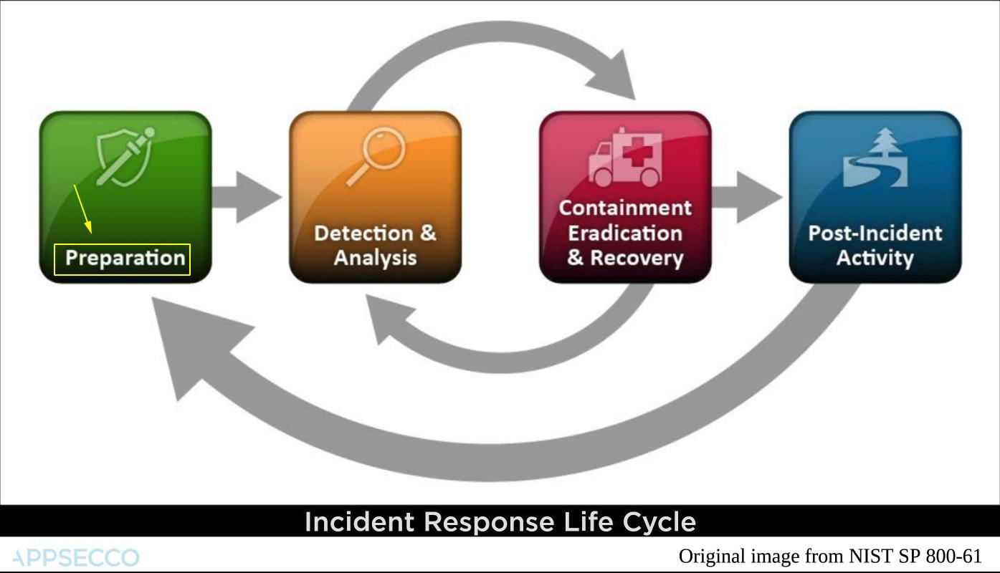
Example - Automating EBS Volume Encryption using Ansible
EBS volume encryption is a feature provided by AWS to ensure that sensitive data at rest is secured and is in compliance with regulations.
Prerequisites
- The Ansible playbook is written is such a way that it checks for instances and associated volumes that have the tag
createdForwith the valuevolume-encryption. This is done, so that the user can specify which all instance volumes has to be encrypted - To run the playbook, it is required to have
ansibleandaws-clicredentials - The playbook uses AWS authentication through
AWS_PROFILE
Playbook Code
The playbook is written in two parts, the first part (playbook.yml) will check for instances that have the tag createdFor with value volume-encryption. Then it also checks for the list of volumes with the same and also have the Encrypted property with value Not Encrypted.
After the collection of list of instance volumes to be encrypted, the playbook will loop through the second part (include.yml) for the following steps for all collected instances,
- Stop the EC2 instance
- Create Snapshot of the main volume
- Detach Existing Volume from the instance
- Create a Encrypted Volume with double the size from the created snapshot and attach it to the instance
- Start the instance
The playbook executes this in a sequential manner.
Before running the Playbook, you will have to substitute the kms_key_id - Encryption key ID that was created under KMS service for performing a volume encryption. This value is in include.yml.
Post incident
After all EBS volumes that need to be encrypted have been successfully encrypted the runbook for creating EBS volumes should be updated to ensure that by default when new volumes are created they are encrypted.
Security Dashboard using Cloud Native
A security dashboard gives us visibility. This is especially important once we have security related checks that run automatically, visibility becomes even more important.
What should a good security dashboard contain
We will not attempt to answer that question. Primarily we are not experts in that domain.
But lets try to answer the question from a different point of view.
Can we create a security dashboard that doesn't require maintenance and management? It is possible if we use cloud native thinking along with a data driven static site.
Building a security dashboard
JAMStack
JavaScript + APIs + Markup
Hugo Static Site
- Using Hugo we create a custom short code
- We download the list of users at regular frequency and list them out